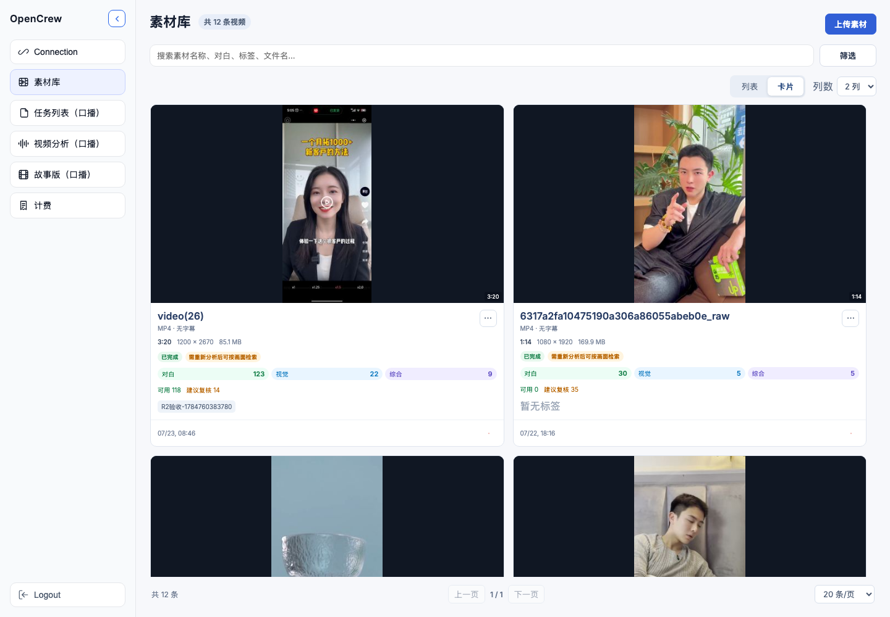
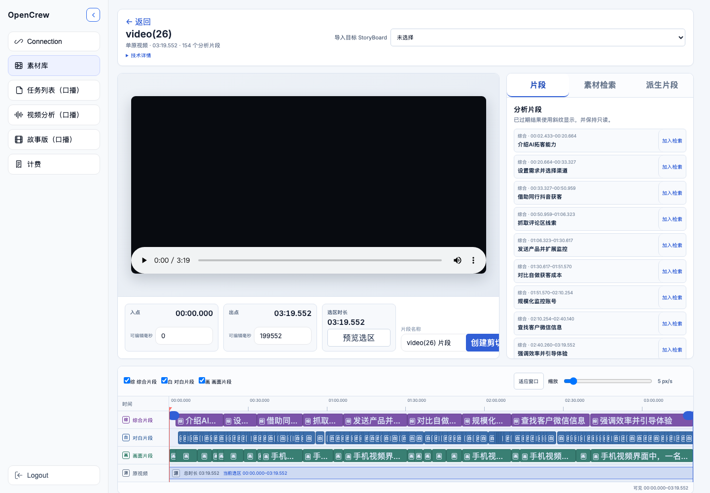
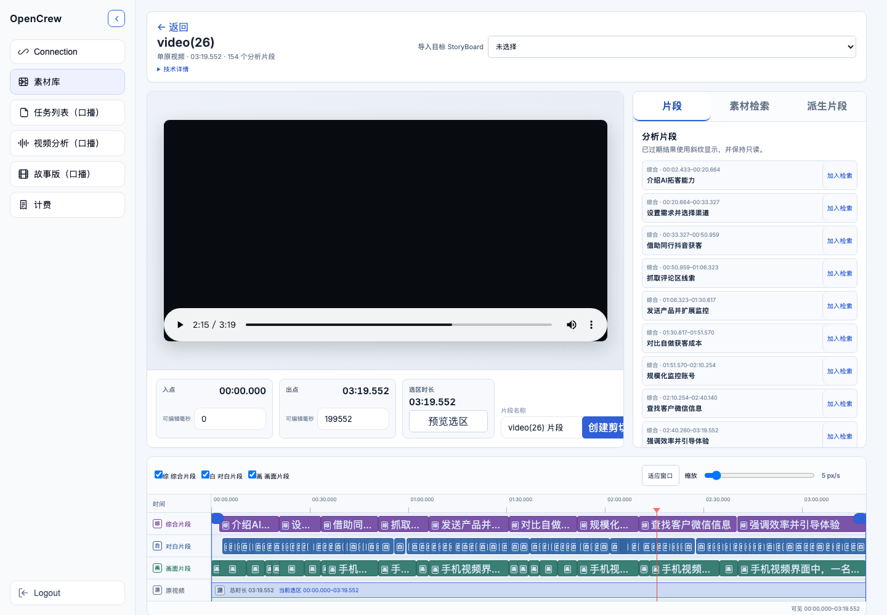
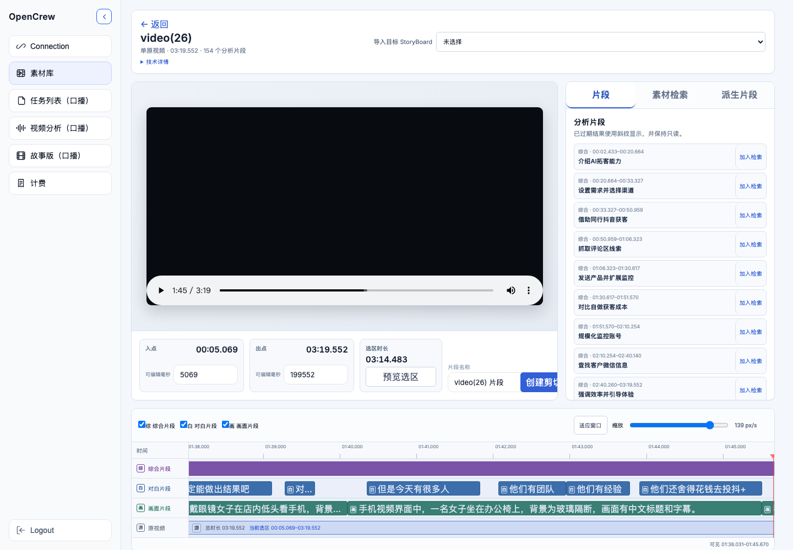

1. 这次改动带来的业务价值
它把“找到素材、理解素材、定位画面”这条常用链路做成一套连贯操作：标签负责业务语义，卡片负责视觉浏览，连续拖动负责精确定位。
更快归类标签用可删除标签片编辑，新增标签立即进入筛选项，不再依赖逗号字符串和浏览器弹窗。
更快挑片列表适合密集比较，卡片适合看画面；查询、排序、分页和操作完全共享。
更准剪辑拖动时播放头、时间和视频画面连续同步，放大后可自动滚到不可见区间。
3. 卡片视图与自定义列数
- 点击页面右上方“卡片”。当前搜索、筛选、排序、页码保持不变。
- 在“列数”中选择 2–6 列。默认是 4 列，选择会写入本机浏览器偏好并在刷新后保留。
- 窗口变窄时，实际列数会自动下降；窗口恢复后回到用户偏好，不会覆盖偏好值。

卡片顶部用于快速预览，素材名进入详情；标签最多显示两行，超出以 +N 收拢。坏缩略图会回退占位，不会留下空白卡片。
视图只是展示偏好，不是第二份业务状态。列表和卡片使用同一个素材对象、分页结果、查询条件和操作处理器，因此切换视图不会导致“一个视图能做、另一个不能做”的分叉。
4. 视频剪辑时间轴连续拖动
按下抓住顶部播放头或时间轴空白
→
移动连续更新播放头、时间和画面
→
松开执行一次精确最终定位
4.1 标准操作
- 进入素材详情，点击“编辑/剪辑”。
- 按住时间轴顶部红色播放头抓手，或在标尺空白位置按下并拖动。
- 拖动期间视频自动暂停；若正在“预览选区”，该预览会立即取消。
- 松开后，界面时间与视频
currentTime完成最终对齐。


4.2 放大与边缘自动滚动
拖动“时间轴缩放”后，画布可能宽于视口。指针进入左右 32px 边缘区时，会通过动画帧循环自动滚动；继续拖动仍能到达原先不可见的时间。片段左右边界手柄使用同一套机制，但不会抢走播放头。

为什么不会“回弹”？拖动期间系统隔离迟到的
timeupdate/seeked 反馈；松开后仍保持隔离，直到最终精确 seek 完成或超时清理，旧事件不能把播放头拉回旧位置。5. 流畅预览代理与时基守卫
浏览器可以播放低码率 30fps 代理，但所有剪切坐标始终是源文件毫秒，不会用代理帧号反推。上传链路会用 ffprobe 比较源视频和新代理的时长：
- 时长差小于或等于 100ms：发布新代理。
- 时长差大于 100ms：不发布新代理，回退源流并记录诊断。
- 重新处理失败时只删除本次临时产物，不会误删已有合格旧代理。
守卫由独立的 OPENCREW_MEDIA_LIBRARY_PROXY_TIMEBASE_GUARD 控制。macmini-4 已持久启用；若出现合法容器被误判，只关闭这一个守卫即可恢复旧代理发布行为，不需要回滚标签、卡片或时间轴。
6. 工作原理（简化版）
| 层 | 关键职责 |
|---|---|
| SolidJS 页面 | 页面持有查询、分页、菜单和标签弹层状态；卡片和表格只消费同一状态，不另建副本。 |
| 标签 API | PATCH 后规范化、稳定 422 错误码、历史异常的“只许改善”兼容、facets 与中文搜索更新。 |
| Pointer helper | 播放头和选区手柄共用 pointer capture、pointercancel、卸载清理和边缘滚动。 |
| 视频同步 | 移动阶段做快速预览 seek，松开阶段做精确 seek，并隔离异步媒体反馈。 |
| 代理守卫 | 代理只优化浏览，不改变源时间坐标；发布前比较时长，异常即回退源流。 |
7. 自动化与浏览器验收结果
- 后端全量契约：1155 passed，1 skipped，233 subtests passed。
- 标签后端契约覆盖 20/32/空值错误码、渐进清理、异常多重集匹配、中文筛选和成功更新。
- 前端组件契约：标签/卡片视图与时间轴契约均通过。
- 真实 Chromium：标签失败保留、成功保存与恢复；列表/卡片切换；2–6 列偏好及响应式上限；两种视图操作一致。
- 真实 Chromium：连续拖动、选区事件隔离、最终画面对齐、边缘滚动、pointer release 清理均通过。
- 重启后 macmini-4 前后端健康，代理守卫本地配置持续启用。
8. 建议人工复验步骤
- 给一个普通素材添加“访谈”“横屏”，刷新并用标签筛选；再删除一个和全部标签。
- 选中历史超限素材，确认只减少标签可以保存、复制异常标签会被拒绝。
- 设置 6 列后逐步缩窄窗口，再恢复到宽屏；确认偏好仍为 6。
- 分别从列表和卡片执行预览、详情、重命名、编辑标签、归档和删除（删除请使用可丢弃素材）。
- 选择至少 30 秒视频，从约 10 秒拖到 25 秒；同时观察播放头、时间文本和画面。
- 播放“预览选区”时开始拖动，确认立即暂停且不回弹。
- 放大时间轴，拖到左右边缘；再拖动选区手柄，确认两种拖动互不抢占。
- 用明确会生成代理的高分辨率/高帧率素材复验源流与代理流；坐标都应使用源毫秒。